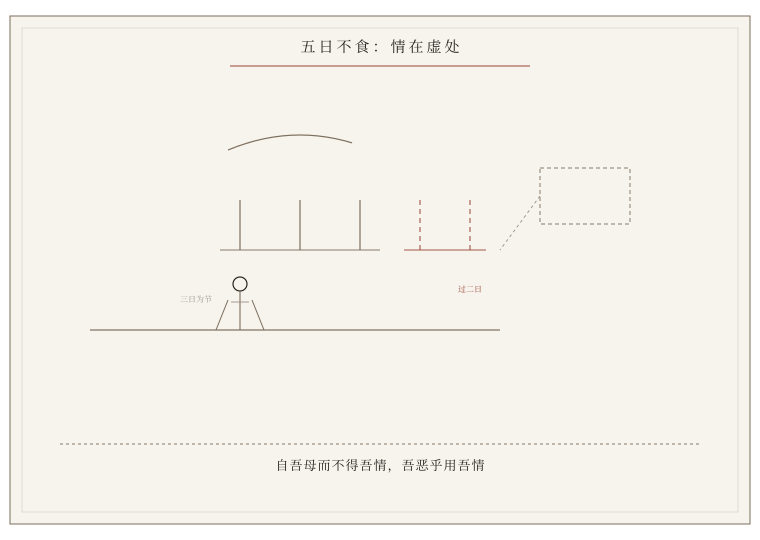

檀弓下 · 四·九十 · 第 415 课
乐正子春之母死，五日而不食，曰：「吾悔之。自吾母而不得吾情，吾恶乎用吾情？」
说什么事：乐正子春之母死，他五日不食——礼只三日，他多二日。后来他说：「我后悔。连我母亲死时都不能得到我的真情，我还能在哪里用我的真情？」
落在哪一层：以「过礼亦伪」为界。不及是亏，过亦是矫。
为何编在此位：上是「服非为兄」，此是「食非为亲」。两件皆问理由。
【经】乐正子春之母死，五日而不食，曰：「吾悔之。自吾母而不得吾情，吾恶乎用吾情？」
【注】勉强过礼。子春，曾子弟子。／恶乎犹於何也。
【疏】此一节论孝子遭丧哀过之事。○乐正子春即曾子弟子，坐於床下者是也。此其母死五日而不食者，礼三日，其五日，过二日。○「曰吾悔之」者，悔其不以实情，勉强而至五日。○「自吾母而不得吾情，吾恶乎用吾情」者，自吾母死而不得吾之实情，而矫诈勉强为之，更於何处用吾之实情乎？
乐正子春 曾子弟子。疏云「坐於床下者是也」。
五日而不食 礼三日不食，此过二日。
吾悔之 悔其过。
勉强 注云「勉强过礼」。非情之所至而强为。
不得吾情 「不得」，谓不至、不获。
吾恶乎用吾情 恶乎，於何也。「用」，施行。
乐正子春之母死，五日不食。他说：「我后悔。连我母亲死时都不能得到我的真情，我还能在哪里用我的真情？」
此章一过一悔一问。
过在二日，悔在一「勉强」，问在「恶乎」。
三日之礼，是给情定一个界；过界者，情已不在。
第一层 三日之节 礼：亲死三日不食。
三日者，不是上限，是「可以不食」的极限。 过此则非情所能支。
第二层 子春的五日 注云「勉强过礼」。疏云「过二日」。
这二日不是哀，是撑。 撑给人看，与哀给人看，同是给人看。
第三层 「吾悔之」 一个做过的人自己回头断此案。
他不是悔其不孝，是悔其不真。 疏云「悔其不以实情」。
第四层 「不得吾情」 四字最狠：母死，是情最该出的时候。
此时尚不得其情，则情无处可出。
第五层 「吾恶乎用吾情」 反问，实为断语：情若不能用于此，便终身无用。
礼之教，不是教人多做，是教人把情用在真处。
第六层 过与不及 不及者，礼绳之；过者，礼亦绳之。
过礼之害，在于它把「礼」变成了表演。 表演一成，真情便被顶替。
第七层 此章之分寸 宁不及而真，不过而伪。
子春敢自言其悔，是这一章唯一可取处。 悔则犹有情在。
与今日何干 今之孝、今之忠、今之「加班到最晚」，多有勉强过礼者。
此章给一句：做得过头，常是做得不真。
| 左 | 右 |
|---|---|
| 母死 | 情所当出 |
| 五日不食 | 过二日 |
| 礼三日 | 节 |
| 勉强过礼 | 非情 |
| 吾悔之 | 自断其伪 |
| 不得吾情 | 情不至 |
| 恶乎用吾情 | 无处可用 |
| 过与不及 | 两皆绳之 |
| 悔则犹有情 | 可救 |
画一幅极简的居丧场景，视点平视。画面下方一条水平地面线。地上一人跪坐，身形瘦长，头低垂，双手放在膝上。其身前画五只并排的空碗，前两只碗内画一点残食，后三只完全空着。人物右侧画一条竖直的短线，线旁再画两条叠置的短横。画面右上角画一个小小的方框，框内空白。不画文字。赭色只用在那三只空碗的碗口上。
